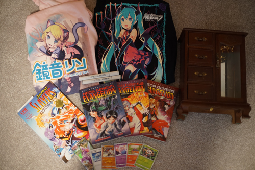
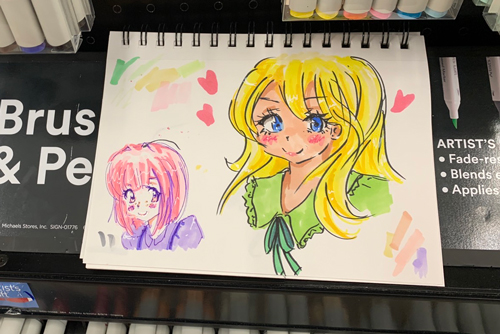
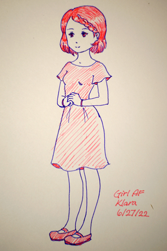

did any of you with iphones discover you can play .webm now?? gosh that took forever. before i start any wars, my favorite phone is no phone. get your butts outside and play in the dirt already!!!
cant say i ever expect to buy anything when i walk into Ross. unisex small is too big for me of course, but thankfully it was unisex so i can make ryan wear them with me.
Colorless blender and neutral grey. really should have bought some closer blending colors before the blender but i'll need it eventually. i probably should have bought a less saturated cyan and magenta instead.
mfw there was no volume 1. mfw i found out how much they were at the register. i have been spoiled by 55 cent books at my own thrift store
ryan found and bought this for me! for doll reasons
ryan also bought this for me! i love the cute inkay and rowlet!!!
kohi and I went to michaels and she tested out the artist loft alcohol pens. i might have made a mistake showing her them because she really liked them! she drew such cute girls too ;u;
i was thinking about getting another petit1 for one of my other pen obsessed coworkers (i get half my gel pens from her) but mine is so scratchy!! right out of the box the tines arent perfectly aligned which i assume is the cause. i dont really want to buy her a pen that sucks. the cart is really small too which wont be an issue for me, but it looks like i've gone through half the ink in just a few pages of repeatedly practicing katakana. There's definitely a few issues with this pen that i cant recommend it for.
i finished reading Klara and the sun. I really love klara so the ending was a bit upsetting. i want my own AF to dress up and play with! it was surprising to read that she wasn't 150 kg like 2B. I drew my own klara! there's not a ton of description of her so i did my best to convey klara to you!
speaking of 2B, nier automata switch port??! i hope it runs okay. i dont know if i need it because ryan and i already have 2 copies between us and ive already played it twice, the first deleting my save and the second time being a 100% achievement run. it is one of my favorite games but how many copies do i need?? persona 3 portable also but its digital only. i really want a physical copy of that one since i bought the digital one on my vita and wasnt smart enough to buy the PSP UMD before the prices all exploded. that game is another one of my favorites but i'll just play it on my vita. WAIT will they put the undub on switch?!?!